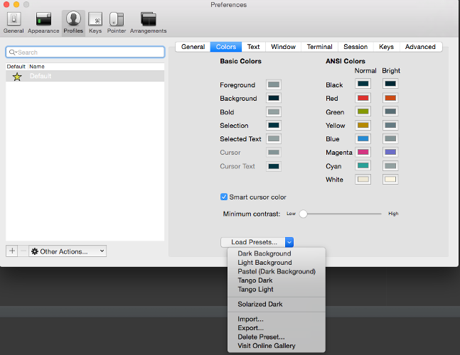
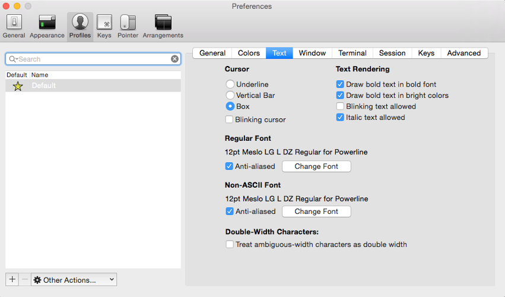
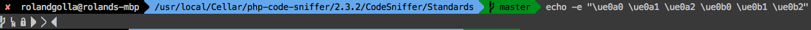

oh-my-zsh
Entwicklungshilfe
entwicklungshilfe.nrw / @help_for_devs /
FB/entwicklungshilfe.nrw
Black
White
EH
Powerline font
https://github.com/powerline/fonts/blob/master/Meslo/Meslo%20LG%20L%20DZ%20Regular%20for%20Powerline.otfpress raw and install
ZSH installieren
https://github.com/robbyrussell/oh-my-zshcurl -L https://raw.github.com/robbyrussell/oh-my-zsh/master/tools/install.sh | sh
or
wget https://raw.github.com/robbyrussell/oh-my-zsh/master/tools/install.sh -O - | sh
Installation
Solarized Theme
http://ethanschoonover.com/solarized/files/solarized.zipunpack and in folder "iterm2-colors-solarized" the "Solrized Dark.itermcolors" double click
Installation
Open iTerm and pres "cmd + ," at colors "Load Presents" dropdown "Solarized dark".
Installation
Set the new font
Installation
brew install fortunebrew install cowsay
vim .zshrc
ZSH_THEME="agnoster"
plugins=(git jump jira osx z extract chucknorris history)
Iterm restart or open new tab. Enter this command
echo -e "\ue0a0 \ue0a1 \ue0a2 \ue0b0 \ue0b1 \ue0b2"

Sources
Plugin wikihttps://github.com/robbyrussell/oh-my-zsh/wiki/Plugins
Cheatsheet
https://github.com/robbyrussell/oh-my-zsh/wiki/Cheatsheet
Directories
| Alias | Command |
|---|---|
| alias | list all aliases |
| .. | cd .. |
| ... | cd ../.. |
| .... | cd ../../.. |
| ..... | cd ../../../.. |
| / | cd / |
| md | mkdir -p |
| rd | rmdir |
| d | dirs -v (lists last used directories) |
| ~3 | cd to dir -v 3 |
Usefull git alias
| Alias | Command |
|---|---|
| gst | git status |
| gf | git fetch |
| gl | git pull |
| gp | git push |
| gaa | git add --all |
| gco | git checkout |
| gcmsg | git commit -m |
| gclean | git clean -fd |
| gcb | git checkout -b |
| gcm | git checkout master |
Jump plugin
| Alias | Command |
|---|---|
| mark | mark actual folder with name as mark |
| mark yourname | mark actual folder with yourname as mark |
| jump yourname | jump to folder yourname |
| unmark yourname | remove |
OSX plugin
| Command | Description |
|---|---|
| tab | open the current directory in a new tab |
| cdf | cd to the current Finder directory |
JIRA plugin
| Command | Description |
|---|---|
| jira | Open new issue form in browser |
| jira ABC-123 | Open issue in browser |
History plugin
| Alias | Description |
|---|---|
| h | List your command history. Equivalent to using history
|
| hsi | When called without an argument you will get help on grep arguments |
Extract plugin
| Alias | Description |
|---|---|
| extract filename | Extract any compressed filehistory
|